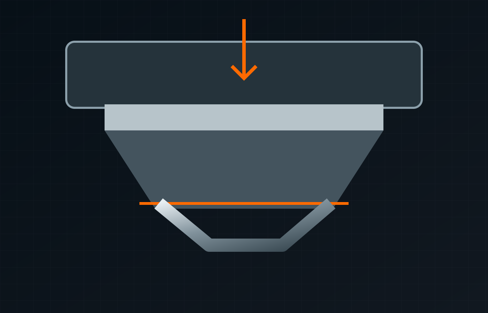

CNC bending SheffieldCNC bending & folding.
CNC bending & folding.
Plan the next stage.
Parkway's 4m 200t Edwards Pearson CNC press brake, tooling range and experienced operators support accurate folding across varied materials and fabrication requirements.
CNC press brake
From flat profile to finished geometry.
Bending and folding connects directly with Parkway's laser cutting, welding and full fabrication offer, helping keep more of the manufacturing process under one roof.
- 4m working length
- 200 tonne press brake capacity
- Edwards Pearson CNC equipment
- Large tooling range
- Experienced operatives
- Suitable for components, enclosures, moulds and bespoke assemblies

Plan the next step
Connect the requirements.
Bend geometry, radii, orientation and any critical dimensions.
- Compare all services
- Manufacturing enquiry guide
- Technical information to verify
- Project evidence & case-study structure
Sector relationships are proposed enquiry routes, subject to owner confirmation.